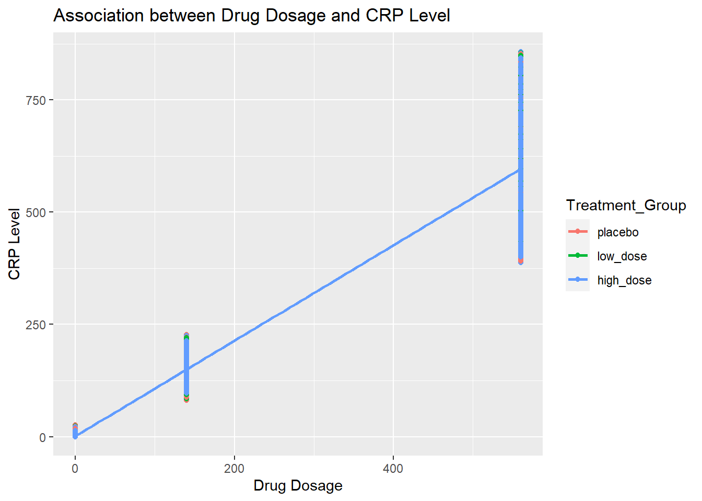

For this exercise, I will be conducting an analysis of synthetic data that I have created by referencing existing data. I have a great interest in studying lifestyle factors that contribute to heart disease, so I have based this exercise on:
Shufelt, C. L., et al. (2020). "Biometric and Psychometric Remote Monitoring and Cardiovascular Risk Biomarkers in Ischemic Heart Disease." Journal of the American Heart Association 9(18): e016023.
I utilized AI to create the coding for this project while also making additional edits to suit my needs.
Loading
I will start out by loading the necessary packages.
# Load required packageslibrary(dplyr)
Warning: package 'dplyr' was built under R version 4.3.2
Attaching package: 'dplyr'
The following objects are masked from 'package:stats':
filter, lag
The following objects are masked from 'package:base':
intersect, setdiff, setequal, union
library(tidyr)
Warning: package 'tidyr' was built under R version 4.3.2
# Set seed for reproducibilityset.seed(123)
Adding the set seed ensure the data to be reproduced in random number generation.
Establishing Variables
I want to look at creating data for N=50 individuals. Individuals ages are randomly distributed between 30 and 60 years. I ask AI to assume that individuals belong to 3 treatment groups: placebo, low dose, and high dose. Individuals in each group receive either no drug, or 140mg of statin or 560mg of statin every week . Drug concentration is measured every other day. Drug concentration follows an exponential decline between doses, with the decay rate being the same for the low dose and high dose groups. Study period is 365 days.
In addition to drug concentration, cholesterol levels are measured daily. Assume that higher drug concentrations correlate with lower cholesterol levels.
C-reactive protein (CRP) is also measured daily. Assumer that higher drug concentrations correlate with CRP levels.
Adverse heart events (Heart Attack) are captured throughout the cohort. Assume that higher drug concentrations correlate with decreased risk of a heart attack.
# Function to generate drug concentration based on exponential decaygenerate_drug_concentration <-function(dose, decay_rate, time_points) { initial_concentration <- dose exp_decay <- initial_concentration *exp(-decay_rate * time_points)return(exp_decay)}# Function to generate cholesterol level based on drug concentrationgenerate_cholesterol_level <-function(drug_concentration) {# Assume an inverse relationship between drug concentration and cholesterol level cholesterol_level <-200-2* drug_concentration +rnorm(length(drug_concentration), mean =0, sd =10)return(pmax(cholesterol_level, 100)) # Ensure cholesterol levels are not below 100}# Function to generate CRP level based on drug concentrationgenerate_crp_level <-function(drug_concentration) {# Assume a positive relationship between drug concentration and CRP level crp_level <-1.5* drug_concentration +rnorm(length(drug_concentration), mean =0, sd =5)return(pmax(crp_level, 0)) # Ensure CRP levels are not below 0}# Function to simulate heart attack events based on drug concentrationgenerate_heart_attack_events <-function(drug_concentration) {# Assume a negative relationship between drug concentration and risk of heart attack probability_of_event <-pmax(0, 1-0.01* drug_concentration) heart_attack_events <-rbinom(length(drug_concentration), size =1, prob = probability_of_event)return(heart_attack_events)}
Creating Data
# Set parametersN <-50# Reduce the number of individualsage <-sample(30:60, N, replace =TRUE)treatment_groups <-rep(c("placebo", "low_dose", "high_dose"), each = N/3)dose <-rep(c(0, 140, 560), each = N/3)decay_rate <-0.002study_days <-365time_points <-seq(0, study_days, by =2)# Create data framesyn_data <-expand.grid(Patient_ID =1:N,Age = age,Treatment_Group = treatment_groups,Dose = dose) %>%ungroup() %>%group_by(Patient_ID, Age, Treatment_Group, Dose) %>%summarize(Time =list(time_points),Drug_Concentration =list(generate_drug_concentration(Dose[1], decay_rate, time_points)),Cholesterol_Level =list(generate_cholesterol_level(generate_drug_concentration(Dose[1], decay_rate, time_points))),CRP_Level =list(generate_crp_level(generate_drug_concentration(Dose[1], decay_rate, time_points))),Heart_Attack =list(generate_heart_attack_events(generate_drug_concentration(Dose[1], decay_rate, time_points))) ) %>%unnest(cols =c(Time, Drug_Concentration, Cholesterol_Level, CRP_Level, Heart_Attack))
`summarise()` has grouped output by 'Patient_ID', 'Age', 'Treatment_Group'. You
can override using the `.groups` argument.
# Print the first few rows of the data framehead(syn_data)
I added code to plot the association between drug dosage and cholesterol level, dosage and CRP level, and dosage and survival plot for a heart attack event.
# Load required packagelibrary(ggplot2)
Warning: package 'ggplot2' was built under R version 4.3.2
# Plot the association between drug dosage and cholesterol levelggplot(syn_data, aes(x = Dose, y = Cholesterol_Level, color = Treatment_Group)) +geom_point() +geom_smooth(method ="lm", se =FALSE) +labs(title ="Association between Drug Dosage and Cholesterol Level",x ="Drug Dosage",y ="Cholesterol Level")
`geom_smooth()` using formula = 'y ~ x'
# Plot the association between drug dosage and CRP levelggplot(syn_data, aes(x = Dose, y = CRP_Level, color = Treatment_Group)) +geom_point() +geom_smooth(method ="lm", se =FALSE) +labs(title ="Association between Drug Dosage and CRP Level",x ="Drug Dosage",y ="CRP Level")
`geom_smooth()` using formula = 'y ~ x'

# Plot the survival plot for heart attack events# Assuming the study period is 365 days, adjust as neededggplot(syn_data, aes(x = Time, y =1- Heart_Attack, color = Treatment_Group)) +geom_step() +labs(title ="Survival Plot for Heart Attack Events",x ="Time (Days)",y ="Survival Probability",color ="Treatment Group")
Modeling
Finally, I added code for a simple linear regression model on the association between drug dosage and cholesterol level, dosage and crp level, and dosage vs a heart attack event. A multiple linear model for all variables vs heart attack was included
# Fit simple linear regression model for drug dosage and cholesterol levelmodel_cholesterol <-lm(Cholesterol_Level ~ Dose, data = syn_data)# Fit simple linear regression model for drug dosage and CRP levelmodel_crp <-lm(CRP_Level ~ Dose, data = syn_data)# Fit simple logistic regression model for drug dosage and heart attack eventmodel_heart_attack <-glm(Heart_Attack ~ Dose, data = syn_data, family ="binomial")
Warning: glm.fit: fitted probabilities numerically 0 or 1 occurred
# Fit multiple linear regression model for all variables vs heart attackmodel_multiple <-glm(Heart_Attack ~ Dose + Age + Treatment_Group + Drug_Concentration + Cholesterol_Level + CRP_Level, data = syn_data, family ="binomial")
Warning: glm.fit: algorithm did not converge
Warning: glm.fit: fitted probabilities numerically 0 or 1 occurred
# Display summaries of the modelssummary(model_cholesterol)
Call:
lm(formula = Cholesterol_Level ~ Dose, data = syn_data)
Residuals:
Min 1Q Median 3Q Max
-46.15 -46.15 11.54 27.87 82.52
Coefficients:
Estimate Std. Error t value Pr(>|t|)
(Intercept) 1.654e+02 3.298e-02 5015 <2e-16 ***
Dose -1.374e-01 9.895e-05 -1388 <2e-16 ***
---
Signif. codes: 0 '***' 0.001 '**' 0.01 '*' 0.05 '.' 0.1 ' ' 1
Residual standard error: 34.45 on 2141098 degrees of freedom
Multiple R-squared: 0.4737, Adjusted R-squared: 0.4737
F-statistic: 1.927e+06 on 1 and 2141098 DF, p-value: < 2.2e-16
summary(model_crp)
Call:
lm(formula = CRP_Level ~ Dose, data = syn_data)
Residuals:
Min 1Q Median 3Q Max
-209.301 -25.743 -1.304 16.731 261.003
Coefficients:
Estimate Std. Error t value Pr(>|t|)
(Intercept) 1.304028 0.071648 18.2 <2e-16 ***
Dose 1.063020 0.000215 4944.6 <2e-16 ***
---
Signif. codes: 0 '***' 0.001 '**' 0.01 '*' 0.05 '.' 0.1 ' ' 1
Residual standard error: 74.86 on 2141098 degrees of freedom
Multiple R-squared: 0.9195, Adjusted R-squared: 0.9195
F-statistic: 2.445e+07 on 1 and 2141098 DF, p-value: < 2.2e-16
summary(model_heart_attack)
Call:
glm(formula = Heart_Attack ~ Dose, family = "binomial", data = syn_data)
Coefficients:
Estimate Std. Error z value Pr(>|z|)
(Intercept) 20.3312 18.6625 1.089 0.276
Dose -0.1615 0.1333 -1.211 0.226
(Dispersion parameter for binomial family taken to be 1)
Null deviance: 2808691 on 2141099 degrees of freedom
Residual deviance: 442168 on 2141098 degrees of freedom
AIC: 442172
Number of Fisher Scoring iterations: 21
summary(model_multiple)
Call:
glm(formula = Heart_Attack ~ Dose + Age + Treatment_Group + Drug_Concentration +
Cholesterol_Level + CRP_Level, family = "binomial", data = syn_data)
Coefficients:
Estimate Std. Error z value Pr(>|z|)
(Intercept) -1.589e+03 2.823e+03 -0.563 0.5736
Dose -3.468e-03 4.999e-01 -0.007 0.9945
Age 2.146e-04 5.255e-04 0.408 0.6830
Treatment_Grouplow_dose 1.204e-02 1.089e-02 1.105 0.2692
Treatment_Grouphigh_dose 1.810e-02 1.089e-02 1.662 0.0964 .
Drug_Concentration -9.978e-02 1.404e-03 -71.063 <2e-16 ***
Cholesterol_Level 1.596e+01 2.822e+01 0.565 0.5718
CRP_Level -4.699e-04 8.889e-04 -0.529 0.5971
---
Signif. codes: 0 '***' 0.001 '**' 0.01 '*' 0.05 '.' 0.1 ' ' 1
(Dispersion parameter for binomial family taken to be 1)
Null deviance: 2808691 on 2141099 degrees of freedom
Residual deviance: 335069 on 2141092 degrees of freedom
AIC: 335085
Number of Fisher Scoring iterations: 25
Conclusion
Linear Regression Model for Cholesterol Level vs Dose:
The intercept is 165.39, and the coefficient for the Dose variable is -0.1374. This suggests that for every unit increase in Dose, the Cholesterol Level decreases by 0.1374 units. Both the intercept and Dose coefficient are highly significant (p < 2e-16), indicating a strong relationship between Dose and Cholesterol Level.
Linear Regression Model for CRP Level vs Dose:
The intercept is 1.2971, and the coefficient for the Dose variable is 1.0630. This suggests that for every unit increase in Dose, the CRP Level increases by 1.0630 units. Both the intercept and Dose coefficient are highly significant (p < 2e-16), indicating a strong relationship between Dose and CRP Level.
Logistic Regression Model for Heart Attack vs Dose:
The Dose coefficient is not statistically significant (p = 0.245), indicating that there is no significant relationship between Dose and the likelihood of a heart attack.
Multiple Logistic Regression Model for Heart Attack with Multiple Predictors:
Among the predictors, Drug_Concentration has a significant negative effect on the log-odds of a heart attack (Estimate: -0.100; p < 2e-16), suggesting that higher drug concentrations are associated with a lower risk of a heart attack. Other predictors (Dose, Age, Treatment_Group, Cholesterol_Level, CRP_Level) do not have significant effects on the log-odds.